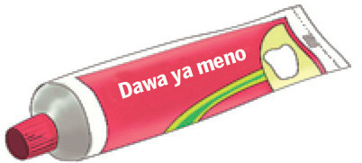
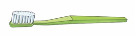

Sura ya Kwanza
Usafi wa mwili
Ninasafisha kinywa changu.
Paka wa katuni amesimama na kuashiria wakati wa kuzungumzia usafi wa kinywa.
Ninatumia vifaa hivi kusafisha kinywa changu.
1

2
3
a

b
Maswali
1. Taja majina ya vifaa vya kusafishia kinywa ulivyoviona au ulivyovibaini katika picha 1–3.
2. Taja vifaa vingine vya kusafishia kinywa unavyovifahamu.